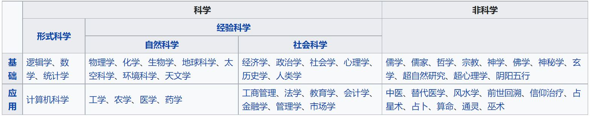
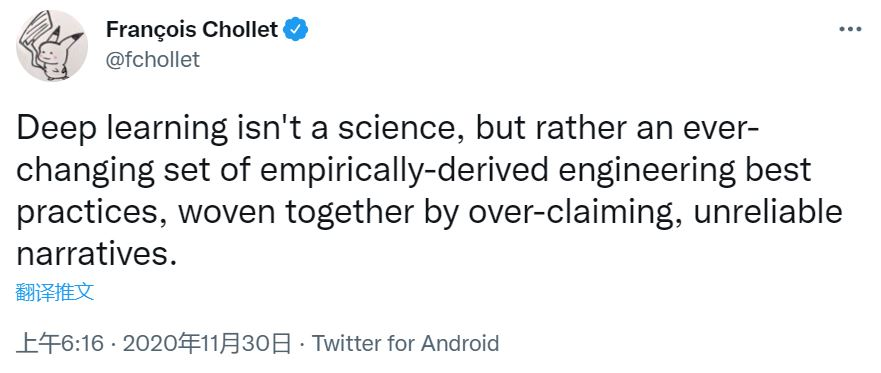

研究的研究（一）：什么是科学研究？
即将进入Graduate Study的阶段，对研究二字不再是少时的仰望，却也有不少失望，大概原因是科幻/魔幻/奇幻作品看太多了，脑子不大正常了。害，忘不掉的儒尔凡尔纳、哆啦A梦、变形金刚、哈利波特和钢铁侠，甚至还有铠甲勇士、果宝特攻、猪猪侠、奥特曼、巴啦啦小魔仙… 幻想就是用来被打破的 吧 😃
这次准备写一个系列博客，关于研究的研究——Introduction to Research (CS)，记录本人研究的研究历程与思考。不是大佬，纯小白一个，但… 小白的碎碎念也很有意思的哦。
科研
科学研究（Scientific Research），简称科研，官方解释到处都是，这里就不提了。这里重点要说的是科学（Science）和研究（Research）。
科学 Science
科学（英语：science，词源为拉丁语：scientia，意为“知识”）是一种系统性的知识体系，它积累和组织并可检验有关于宇宙的解释和预测。科学强调预测结果的具体性和可证伪性。
现代科学三大分支：形式科学（Formal science）、自然科学（Natural Science）、社会科学（Social Science）。
- 形式科学：主要研究对象为抽象形态的科学。包括数学、逻辑、统计学、信息论、博弈论、理论计算机（TCS）等。
- 自然科学：研究大自然中有机或无机的事物和现象的科学。包括天文学、物理学、化学、地球科学、生物学、地质等。
- 社会科学：用科学的方法，研究人类社会的种种现象。包括包含了心理学、语言学、犯罪学、教育学、法律学、政治学、经济学及商学、社会学等。
其中，自然科学和社会科学属于经验科学（Empirical Science，也叫实证科学，实验科学），与之对应的叫理论科学。科学的具体发展过程与希腊哲学、文艺复兴等息息相关，详情可参考维基百科 - 科学。
基础科学 vs. 应用科学
- 基础科学：以自然现象和物质运动形式为研究对象，探索自然界发展规律的科学。
- 七大基础学科：数学、物理学、化学、生物学、天文学、地球科学、逻辑学
- 应用科学：综合科学的理论成果，将其应用到实际问题上的科学。
- 特征：方向性强，目的性明确，与实践活动的关系密切，且直接体现着人的需求。
- 主要学科：计算机科学、运筹学、应用数学、数学经济等等
交叉学科
随科学的发展，学科之间开始合作整合，衍生出新的交叉学科。例如：
- 化学 + 物理学 = 物理化学和化学物理学
- 化学 + 生物学 = 生物化学和化学生物学
- 物理学 + 生物学 = 生物物理学
计算机中的交叉学科（小方向）：
- 统计学 + 计算机科学 = 大数据
- 计算机 + 心理学 + 哲学 + … = 人工智能
- 数学 + 计算机科学 + 艺术 + … = 图形学
A->B，A是B的基础，B是A的应用：

查理芒格 —— 全归因治学方法（The Fundamental Full Attribution Ethos of Hard Science）：学习任何一个领域的知识，一定要想办法找到这个知识最初的出处是什么，尤其是硬科学（Hard Science）知识的出处，当掌握了一个知识的出处之后，才能继续运用这个知识去进一步解决问题。 一方面学习人类犯的错误，另一方面也要学习最牛的人是怎么做的。
我们需要掌握比所在学科更基础的学科的所有基本思想，这样看问题更深刻，解释问题更清晰。
看上去要学会的是B，实际需要学会的是A。
硬科学 vs. 软科学
问：物理、化学、生物肯定是科学，那社会科学比如经济学是不是科学？
答：是软科学（Soft Science）。物理、化学、生物是硬科学（Hard Science）
硬科学和软科学是一种口语术语，用于根据所感知的方法的严谨性、准确性和客观性来比较科学领域。粗略地说，自然科学被认为是“硬的”（理科），而社会科学通常被描述为“软的”（文科）。
总结 Q&A：计算机科学与科学
计算机科学（CS）属于应用科学。
理论计算机（TCS）方向属于形式科学，有着数学和抽象的本质，但动机来自实践和日常中的计算问题。它旨在理解计算的本质，并根据这种理解提供更有效率的方法。此领域需要强调更严格的数学。维基百科
Q1：计算机科学与科研？
一开始我总觉得科研、实验跟CS半毛钱关系没有，搭都搭不上边。原因：
- 受曾经应试教育的影响，我理解的科研更倾向于纯粹的基础科学（尤其是特指自然科学）
- 刚学CS就是写代码，总觉得，并不算是“实验”。打个比方，学数学1+1的时候，也不会觉得这是实验、是科研吧。
但CS本身小方向很多，不同的应用方向、不同的交叉，都会导致对实验和理论的理解不完全相同。比如我们学的数据结构与算法，属于TCS，实验or理论？再比如，神经网络跑accuracy对比，实验or理论？因此，如果形式科学、社会科学的研究也能被成为科研，那CS的研究也一定算科研。
Q2：深度学习是实验科学吗？
关于此问题，当前的观点不一：
- 是实验科学
- 不是科学：是一套不断变化的经验衍生的工程最佳实践。——François Chollet

我更赞同François Chollet的说法，毕竟CS是应用科学，深度学习图像识别、语义分析等也都与实际应用息息相关；而实验科学更多是自然界。但是深度学习中（尤其是相关论文中），既喜欢与自然界类比，比如神经网络、神经元一类名词，结论也是“实验”结果来的，所以说深度学习是实验科学，也不算错吧。
如果从实验科学的角度看，神经网络跑出来的结果为什么正确？不用解释，因为实验结果如此。
Q3：图形学、体系结构、计算机网络？
| Soft Science | Hard Science | Others |
|---|---|---|
| 少量社会学、艺术等 | 数学（大量）、逻辑学、物理学（大量），甚至是生物、化学 | 运筹学、深度学习等 |
这样来看，这些方向涵盖了更多的Hard Science，对数学、物理的要求也比其他方向要高。但是也因为我们学生时代的大部分精力都在这些Hard Science上，具备基本的概念和理解，上手速度会比较快，但对普通学生来说也更不容易登顶。（毕竟也不是什么xxx奥赛冠军，同年龄段上差距就很明显了…）
Q4：我所做的VIS & HCI？
VIS（Visualization）和HCI（Human-Computer Interaction)，都是很明显的应用科学、交叉学科。VIS中的科学可视化（SciVis）归属于图形学，也是很Hard的，而信息可视化（InfoVis）就比较Soft了。同样，HCI中，跟自动化、机器人那些相关的也是非常Hard的，软件相关就稍显Soft了。
属于目前本人涉猎范围的：InfoVis及其相关的HCI：
- 从Soft和Hard来看：与大部分学科都有交叉，甚至是很需要考虑Soft Science的方面
| Soft Science | Hard Science | Others |
|---|---|---|
| 心理学、社会学、经济学、艺术等等 | 部分数学、逻辑学、物理学等 | 运筹学、深度学习等 |
- 从现代科学三大分支来看：形式科学、自然科学、社会科学，也是均有涉猎
- 与之对应来看，是：理论与实验结合，因此至少也该同时具备上述所有学科的理论与实验的基本思想，才有可能更上一个台阶。但是显然，在我们的教育体系中，Soft+Hard是比较缺失的。
- 从事这个方向，Soft+Hard是基本思想，追求更多的是整体知识的广度和某个方向知识的深度，即所谓“T”型人才。
但本人观点不变，这样的愿景是美好的，但现实可能就是大杂烩一锅炖、万精油。毕竟艺术的前提是技术足够，跨界的前提是本工扎实。在追求跨界的同时，知识（最起码是基础知识）必须要牢固且足够，某个方向必须精通。
Q5：什么叫科研训练？
- 基础足够，且较为扎实。A->B的A也比较熟悉
- 具备收集资料的能力，思维和语言也有逻辑性
- 思考有深度，能提出有水平的问题，也能提出解决方案
Q6：科研和工程？
不可分割，无明显界限：工程=应用，CS=应用科学。大厂能把应用科学的研究成果量产投入使用，并进一步用到极致，还能接着产生更加具体、实际、紧急的重大问题。
该问题的派生问题：横向与纵向？
- 纵向：资金来源为国家、部委等的财政计划
- 横向：资金来源、问题来源于企业、研究所
其实都能发论文的，但学生间所指的横纵好像就是发不发论文一说，总觉得横=码农打工=不能发论文。但因为我们实验室的横向其实都有论文要求，所以也不存在做横向不发论文一说。并且，CS本身就是应用科学，不投入到工程中使用，还有什么价值呢？
因此我认为，区分科研和工程就跟区分横纵一样毫无意义。
研究 Research
维基百科：研究，是用主动和系统方式的过程，是为了发现、解释或校正事实、事件、行为、或理论，或把这样事实、法则或理论作出实际应用。
研究是…
- 一种探索精神、批判精神、原创精神、娱乐精神、…
- 一种思考做事的习惯
- 一种兴趣爱好，是一个人和几群人一起玩的共同爱好
- 一种追赶潮流的时尚文化
- 一种拼接创造的艺术
- 一种实事求是的炫耀（论文和会议上的presentation = show off）😃
以作曲家写一个作品来说：
- 需要上述所有精神
- 需要精心设计每一个乐章、每一个小节、每一个音符
- 这既是他们的事业也是他们的爱好（至少能被成为作曲家的人都是），没有热情，不足以支撑每一天
- 随时代发展，要创造潮流，也需要适时地回到过去
- 要把存在的每一个音符组成不一样的句子和篇章，表达不同的思想和情感
- 把作品展示给大众，以期广为流传
不难对照出，研究的过程（循环往复1-6）：
| 顺序 | 研究 | 作曲 |
|---|---|---|
| 1 | 读书找兴趣 | 听曲子、分析谱子 |
| 2 | 自然产生的idea | 认真生活有感而发~ |
| 3 | 自然产生的解决思路 | 乐理知识+积累的作品 |
| 4 | 查看更相关的文章 | 多听、多分析类似的题材以参考思路 |
| 5 | 整理资料和逻辑线，从叙事到证明 | 精心设计乐句、段落、乐章 |
| 6 | 写成论文，推广出去，show off!!! | 出版&上线！准备接收批评和赞美！ |
这样看，单论研究二字，门槛其实也并没有那么高呢，我倒是觉得跟它距离最近的科目叫语文，毕竟阅读理解、评论概述、分点作答，这可都是语文的精髓。只不过每个行业的门槛各有不同，领域内的专业知识也多种多样，让作曲家去研究数学，也蛮奇怪的。研究门槛不高，核心是做语文题的思维习惯和思考方式；特定方向上的研究，都是一些人的兴趣爱好，又怎能以门槛来衡量呢？强行区分Soft、Hard和鄙视链，好像也没什么意义？如果硬要说有门槛，那就一定是热情passion。我认为，正常的研究应该属于生活，属于真正刻入DNA的习惯和兴趣特长，这绝对不是、也不应该是一种刻意熬夜硬卷的负担。
我就很喜欢ACM SIG这个前缀，Special Interest Groups，特殊兴趣小组。可惜了ACM(Association for Computing Machinery)只是计算机协会，否则SIG这个前缀就该被大力推广应用在方方面面，比如SIGART、SIGMUSIC、SIGDANCE、SIGCLOTH、SIGBadminton，这些都蛮好的嘛，给每个小团体都冠上一个SIG。刚查了一下，竟然还真的有SIGART，只不过现在叫SIGAI，可能ART = Artificial，也算是今天的一大发现 😃
偏个题多评论一句——，要我说，音乐作品也应该跟paper一样有个references的部分，毕竟根本不存在绝对的原创。现在这么多的空耳鉴抄袭，其实也不好说是参考还是抄袭，确实不严谨。有个references，还能让大家丰富一下知识量，拓宽认知，多好。
结语
- 科学种类很多，CS是应用科学，包含实验与理论。
- 研究的本质是兴趣 + 写作；门槛是兴趣 + 基础知识 + 天时地利人和。
- 科研本身并不神秘，它只不过是集中了一群有共同兴趣爱好的人（SIGs、课题组），做一件好玩的事情。
- 当中较难的是idea和解决方案。idea能从侧面反映出某人的知识和思想的广度和深度，是把人分为三六九等的关键。即便是同方向，idea与idea之间的差距肉眼可见。
- 有趣的从来都不是单纯的解决方案、不是论文数量，而是那个旗帜鲜明的
idea + 解决方案
世上无难事，只怕有心人。既已知现状如此，又为何原地踏步担忧未来？研究和研究的研究，要共同前进啊 😃
 wechat
wechat alipay
alipay